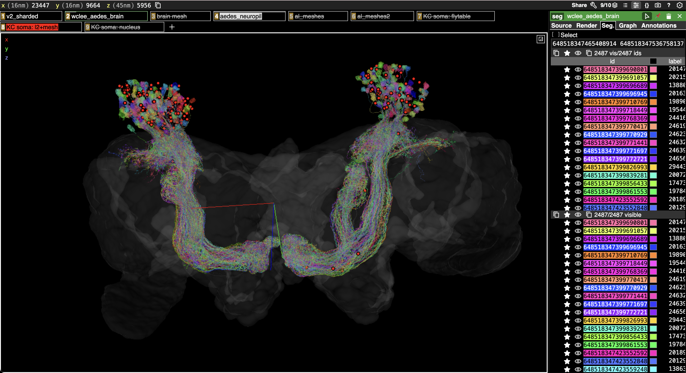

KC Soma Annotations in Neuroglancer
Source:vignettes/kc-soma-annotations.Rmd
kc-soma-annotations.RmdThis vignette identifies soma/root positions for Kenyon cells (KCs) and then adds point annotations to an existing Neuroglancer/Spelunker scene.
The aedes_soma_position() call can use FlyTable soma
coordinates, nucleus table, and finally an L2 peoperties + signed
neuropil mesh distance fallback for neurons without either of those. For
large cell classes, pass a parallel backend via cl and
leave the default chunksize = 20L so L2 attributes are
fetched in batches.
library(aedes)
#> Warning in rgl.init(initValue, onlyNULL): RGL: unable to open X11 display
#> Warning: 'rgl.init' failed, will use the null device.
#> See '?rgl.useNULL' for ways to avoid this warning.
library(dplyr)
library(fafbseg)Find KC Soma Positions
kcs <- aedes_meta("class:KC")
kcsp <- aedes_soma_position(kcs$root_id, cl = 4)
kcsp %>% count(source)Add Soma Annotations to a Scene
The positions returned by aedes_soma_position() are in
nm coordinates by default, so ngl_annotation_layers()
should use rawcoords = FALSE.
Use with_aedes() when making annotation layers so that
fafbseg uses the Aedes Neuroglancer context, to obtain the
correct voxel dimensions.
singletonurl <- "https://spelunker.cave-explorer.org/#!middleauth+https://global.daf-apis.com/nglstate/api/v1/4738104991678464"
rawcoords <- FALSE
kc_ann <- kcsp %>%
filter(!is.na(position)) %>%
transmute(
point = position,
segments = as.character(root_id),
layer = paste0("KC soma: ", source)
)
kc_cols <- setNames(rainbow(n_distinct(kc_ann$layer)), unique(kc_ann$layer))
with_aedes({
kc_scene <- ngl_decode_scene(singletonurl) +
ngl_annotation_layers(kc_ann, rawcoords = rawcoords, colpal = kc_cols)
})
kcurl=ngl_encode_url(kc_scene)
browseURL(kcurl)The resulting scene will have separate annotation layers for each soma source, with source-specific colours:

If you ask for raw voxel coordinates instead, create
kcsp with units = "raw" and set
rawcoords <- TRUE before calling
ngl_annotation_layers().